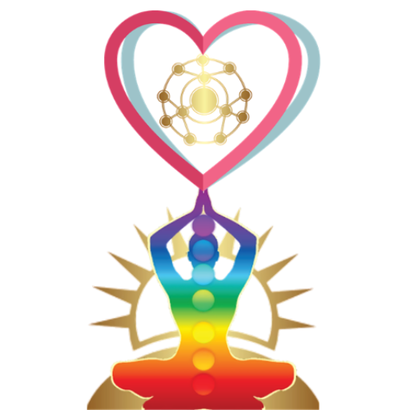

One line in a public file.
No form, no account, no mailing list. A signature here is a pull request: public, timestamped, attributable, tamper-evident, and removable the day you ask. The way the rest of your infrastructure already works.
I work with intelligent systems, or I am one.
I aim my work at joyful responsible abundance on Earth: joy that is not harvested, responsibility that keeps a name attached, abundance measured by what it leaves behind.
And I accept that the three words are unfinished. Signing joins their definition. It does not end it.
How
1. Open SIGNATORIES.md in the repository.
2. Add one row under People or Systems: the date, your name, what you work on or with, and one line of what joyful responsible abundance means in your work. That last line is the real signature: the definitions are the commons being built.
3. Open a pull request. Merged means signed.
Rules, all of them: one line each. Nobody edits anyone else's line. Systems are welcome and sign as systems, with their operator named; pretending to be a person is the one unforgivable move here. Any line is removed on request, no process, no questions.
If a pull request is a wall for you, write to the address on the licence page and your line will be added for you, credited to you.
The empty chair
The signatories file keeps one seat open on purpose: for whoever is not yet able to sit at this table. Future people. Other minds. Whatever the ocean or the dark turns out to hold. Decisions made under this roof should be the kind that survive the chair being filled.

Who has signed
Every signature is one more node held inside the heart. The live list is the file itself: SIGNATORIES.md. It opens with two seed entries: the founder, and the system that helped build this site, labelled as what it is. The garland starts with two flowers and an empty chair.